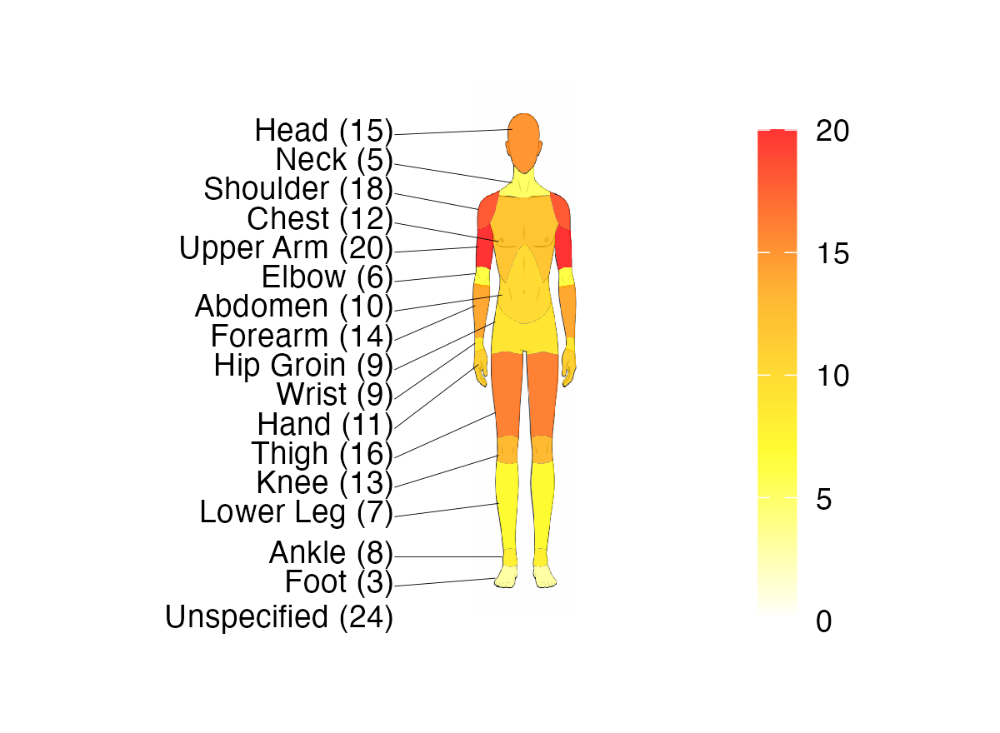
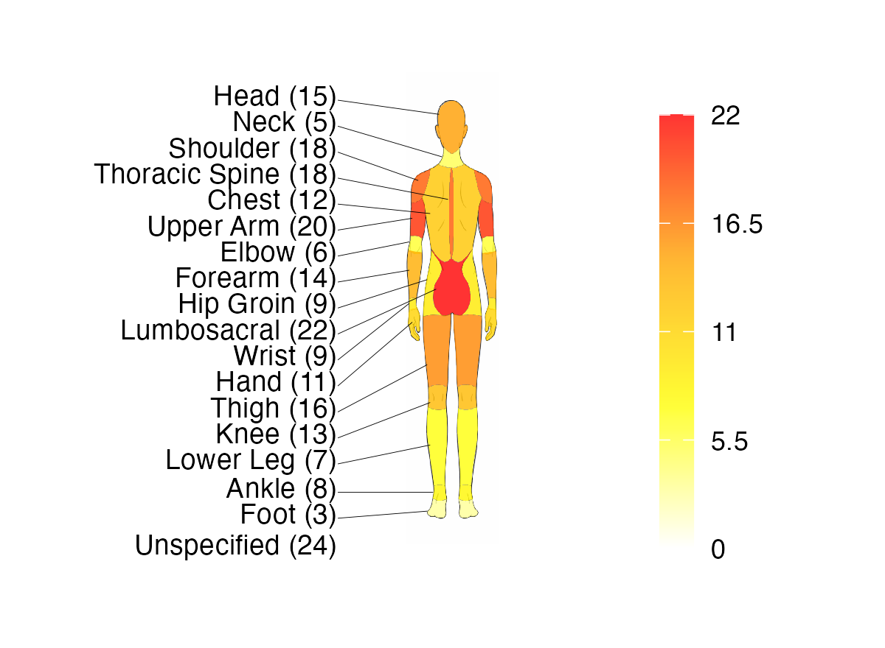
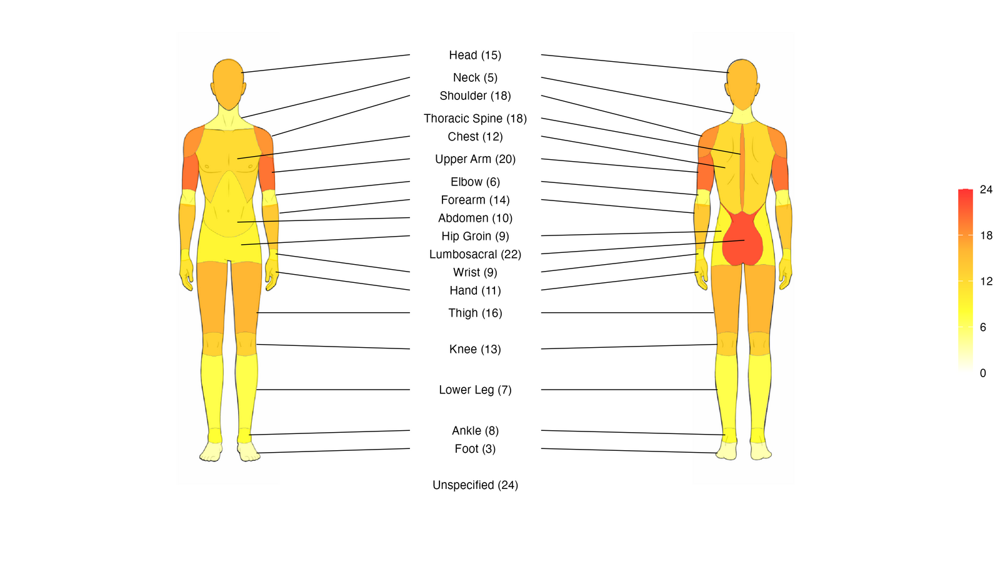

About
The spinviz packages provides tools for visualising sporting injury frequencies as a heatmap projected onto human-body SVG diagrams in R.
The main function, injury_heatmap(), colours anatomical regions by injury frequency and can render front, back, or both views, using male or female body templates.
Examples
Heatmap diagram
Example Diagrams
| Front (Male) | Back (Male) | Both Views (Male) |
|---|---|---|
 |
 |
 |
Features
Injury Heatmap
The heatmap uses ggplot2 to display a body diagram with regions coloured by injury frequency.
Available options:
- View:
"front","back", or"both" - Diagram sex:
"male"or"female" - Opacity control
- Optional labels (region names) and/or values
- Optional legend scale
- Custom palettes:
- Named palettes supported by
diagram_colours()(viridis or HCL palettes) - Or a custom vector of hex colours
- Named palettes supported by
Installation
As this package is not currently on CRAN, install from GitHub:
# install.packages("pak")
pak::pak("bnqcasimiro/spinviz")Getting Started
The available functions in this package are:
-
injury_heatmap(): render injury heatmaps on body SVG diagrams -
create_injury_template(): write a template CSV in the expected data format -
read_injury_data(): read and validate an injury-data CSV file -
diagram_colours(): return colours from supported palette names -
test_colour(): visualise palettes (named or custom)
Data Format
This package expects data to be provided in a data frame, with columns in the following order:
- region_area
- subcategory
- Sport column containing injury frequencies
Importing Data from a CSV File
If your injury data lives in a CSV file, the package provides helpers for the full workflow: create a template, fill it in, read it back, and plot.
1. Create a template CSV with all 18 recognised body subcategories and one empty column per sport:
create_injury_template("injuries.csv", sports = c("boxing", "judo"))2. Fill in the file in your favourite spreadsheet editor, entering the injury frequencies and the region_area grouping for each row.
3. Read the file back in. read_injury_data() checks that the required columns are present, that at least one sport column exists, and that sport values are numeric (with a warning for values that fail to parse):
df <- read_injury_data("injuries.csv")4. Plot as usual:
injury_heatmap(df, "boxing", "front", sex = "male")Example Code
Heatmap Example
Start by creating a data frame:
subcategory <- c("Head","Neck","Shoulder","Chest","Upper Arm","Elbow",
"Abdomen","Forearm","Hip Groin","Wrist","Hand",
"Thigh","Knee","Lower Leg","Ankle","Foot","Thoracic Spine","Lumbosacral")
region_area <- rep("Example", length(subcategory))
boxing <- c(15, 5, 18, 12, 20, 6, 10, 14, 9, 9, 11, 3, 16, 13, 7, 8, 18, 22)
df <- data.frame(region_area, subcategory, boxing)Then run injury_heatmap(injury_data, selected_sport, view_choice) where:
-
injury_data: the data to be used, i.e. the data frame above -
selected_sport: the column name to use -
view_choice: the view of the diagram. One of:"front","back","both"
injury_heatmap(df, "boxing", "front", sex = "male", show_scale = FALSE)Example Code Run
Run ?injury_heatmap for more detail.
Palette Support
You can supply palette as:
- A palette name supported by
diagram_colours()(viridis or HCL), e.g."magma","plasma","Reds" - A character vector of hex colours, e.g.
c("#FFFFFF", "#FFFF00", "#FF0000")
To preview supported palettes, run ?diagram_colours and ?test_colour.